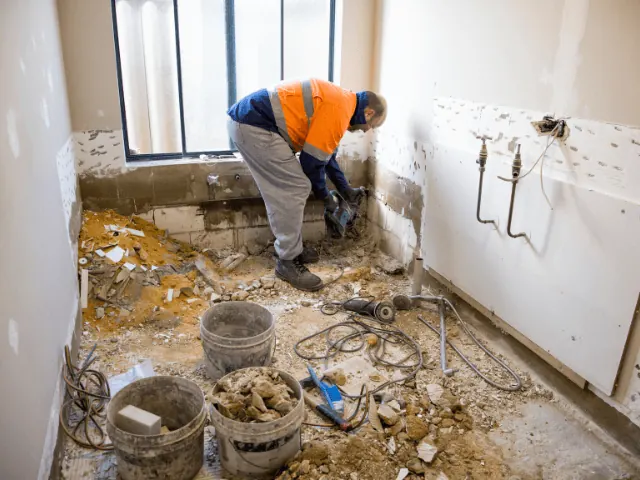

Partnerbijdrage
Een frisse start begint in je eigen badkamer
Gepubliceerd op 9 april 2025

Een lange werkdag, een druk gezinsleven of gewoon behoefte aan een momentje voor jezelf: het speelt zich verrassend vaak af op dezelfde plek. De badkamer. Geen ruimte in huis waar comfort, rust en functionaliteit zó samenkomen. En wie in Nijmegen woont, weet dat een fijne badkamer meer is dan alleen een plek om je tanden te poetsen. Het is een mini-spa, een startpunt van de dag of juist een rustplek voordat je gaat slapen.
Toch zijn er genoeg badkamers die die rol niet helemaal waarmaken. Misschien is het sanitair verouderd, voelt de ruimte krap of ontbreekt er sfeer. Goed nieuws: er is zelden zoveel mogelijk geweest als nu.
Nijmegen kiest voor comfort met karakter
In een stad als Nijmegen, waar historie en eigentijds wonen hand in hand gaan, zie je dat ook terug in de interieurkeuzes. Oudere woningen met karakter vragen vaak om maatwerk, juist in kleinere ruimtes zoals de badkamer. Denk aan slimme opbergoplossingen, zwevende meubels of inbouwkranen. Dingen die niet alleen mooi zijn, maar ook praktisch.
Tegelijkertijd zie je ook nieuwbouw in de regio met grotere badkamers, waar luxe elementen zoals een vrijstaand bad of een dubbele wastafel moeiteloos passen. Wat de stijl ook is, steeds meer mensen in en om Nijmegen kiezen bewust. Voor comfort, kwaliteit en duurzaamheid. En dat zie je terug in de keuzes voor materialen, kleurgebruik en de indeling van de ruimte.
Van Pinterestplaatje naar werkelijkheid
Je hebt vast al eens een badkamer voorbij zien komen op Instagram of Pinterest waarbij je dacht: dát wil ik ook. Marmerlook tegels, een regendouche, warme verlichting. Het ziet er allemaal prachtig uit, maar hoe vertaal je dat naar jouw woning, jouw budget en jouw dagelijkse routine?
Daar komt persoonlijk advies om de hoek kijken. En gelukkig hoeft dat niet ver weg te zijn. De Brugman badkamerwinkel Nijmegen is een plek waar je niet alleen kijkt, maar vooral voelt, test en overlegt. Hoe voelt die tegel onder je voeten? Hoeveel ruimte heb je nodig rond de wastafel? En welke combinaties zorgen ervoor dat je badkamer rust uitstraalt, zonder saai te worden?
Een showroombezoek zorgt voor overzicht. En vaak ook voor inspiratie die je online niet zomaar vindt. Zoals die ene slimme oplossing om een schuine wand juist te benutten, of het gebruik van licht om een kleine ruimte groter te laten lijken.

Jouw wensen, jouw ritme, jouw badkamer
Wat het mooiste is aan de badkamers van nu? Ze passen zich aan jou aan. Ben je een ochtendmens en wil je snel klaar zijn zonder gedoe? Dan werk je met logische indeling, goede verlichting en makkelijke toegang tot je spullen. Wil je juist ontspannen na een lange dag? Dan draait het om sfeer, comfort en misschien wel een bad waar je helemaal in kunt verdwijnen. Iedereen gebruikt een badkamer op z’n eigen manier. Daarom werkt een standaardoplossing zelden.
Een investering die elke dag telt
Natuurlijk is een nieuwe badkamer een investering. Maar wel eentje die je dagelijks terugverdient in comfort, rust en gemak. En dat merk je vooral op de momenten dat het erop aankomt: als je ’s ochtends nét die vijf minuten extra hebt voor jezelf, of als je na een drukke dag thuiskomt en de douche letterlijk alles van je afspoelt.
Woon je in of rond Nijmegen en denk je eraan om je badkamer aan te pakken? Laat het geen project zijn waar je tegenop ziet. Met de juiste begeleiding, een dosis creativiteit en een heldere kijk op jouw woonstijl, kan het juist een van de leukste keuzes zijn die je voor je huis maakt.
En zeg nou zelf: als je dan tóch iedere dag begint en eindigt in dezelfde ruimte, dan mag dat best een beetje bijzonder voelen.
Terug naar de beginpagina
BEKIJKAannemers en verbouw in Nijmegen
Zin om te beginnen? In onze bedrijvengids vind je alle 52 aannemers in Nijmegen, met openingstijden, kenmerken en een kaart.
Bekijk alle 52 aannemers in Nijmegen
Heb je zelf een aannemer? Laat je hier uitlichten.